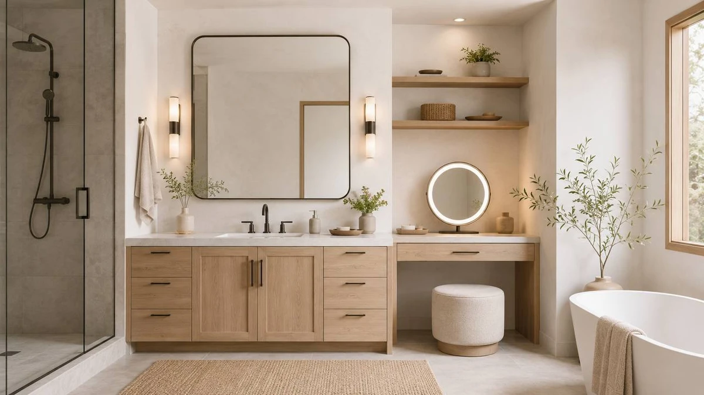

The Best Bathroom Vanities With a Makeup Area (2026)
Prices and picks verified as of September 2026. Independent, reader-supported reviews.


Quick Answer
We compared seven of the best bathroom vanities with makeup area based on storage, mirror quality, and price, and the LUTHXAY Floating Bathroom Vanity with Makeup came out on top for its built-in lighted mirror and stool seating. It costs more than a standard cabinet, but it replaces a separate makeup table most bathrooms do not have room for. If you want the same idea for less, the VASAGLE KAILYN Collection delivers drawer storage and a mirror in a slim 15.7-inch footprint for a fraction of the price.
Our pick: Floating Bathroom Vanity with Makeup — $2,601.66 Check Price on Amazon
Bottom line: our top pick is the Floating Bathroom Vanity with Makeup Table at $2,601.66. The best budget option is the VASAGLE KAILYN Collection - Vanity Desk with Mirror and 9 LED at $140.70.
Things to Know Before You Buy
- Measure your footprint first. These bathroom vanities with makeup area range from a slim 15.7-inch-deep VASAGLE to a 64-inch LUTHXAY floating unit, so tape out the space before you shop.
- A makeup area needs its own light. Look for a mirror with built-in LEDs rather than relying on your bathroom's overhead fixture, which usually casts shadows across your face.
- Drawer count varies widely. The Quimoo ships with seven drawers while some slimmer models have two or three, so match the count to how much makeup and hair gear you actually own.
- MDF is the standard material. Every vanity here uses MDF or engineered wood, which holds up in a bathroom if you seal the edges and wipe up splashes.
- Stool seating adds real cost. Vanities that include a cushioned stool, like the LUTHXAY and LjsJawrxen, cost well above the desk-only models, so decide whether you need to sit down to do your makeup or can stand at the mirror.
Bathroom vanities with makeup area combine a sink or storage cabinet with a dedicated mirror and seating station, so you are not doing your makeup hunched over a bathroom counter or borrowing a bedroom dresser. Anyone who spends real time in front of a mirror each morning knows the problem: overhead bathroom lighting washes out your face, counter space disappears under brushes and bottles, and a shared sink means someone is always waiting. A vanity built specifically for makeup solves all three at once by giving you a defined station away from the sink traffic.
We researched seven vanity and makeup-desk combinations, comparing manufacturer specs, published dimensions, materials, and verified buyer reviews for each one. We did not install or sit at any of these pieces ourselves. Instead we read through what actual owners report after living with them, cross-checked drawer counts and mirror types against the listings, and flagged the complaints that showed up again and again rather than a single outlier review.
The LUTHXAY Floating Bathroom Vanity with Makeup is our top pick among bathroom vanities with makeup area because it pairs a lighted mirror with built-in stool seating in one 64-inch floating unit, so you get a full dressing station instead of a desk with a mirror added on. If that price is more than you want to spend, the SONGMICS HOME and VASAGLE KAILYN options below deliver a smaller version of the same idea for under $155.
Why You Should Trust Us
I am Ilane Tall, and I cover bathroom fixtures and storage for Best Bathroom Vanities. To rank the best bathroom vanities with makeup area, I read through the manufacturer specifications, the listed materials and dimensions, and hundreds of verified buyer reviews for each model, paying attention to complaints that repeat rather than a single bad review. A drawer that sticks for one buyer might be a shipping fluke. The same complaint from dozens of owners tells you where a vanity will actually let you down.
We have no relationship with any of these brands, and we earn a commission only if you buy through our links, which never changes what we recommend. When a vanity has a real weakness, we say so in its section below. Our goal is to point you to the makeup vanity that fits your bathroom, your morning routine, and your budget, not to push the most expensive option on the page.
How We Picked
We started with a wide list of vanities marketed for makeup and dressing use and narrowed it with four filters. First, the piece had to include a mirror as part of the listing, not sold separately, since a bathroom vanity with makeup area is only useful if the mirror ships with it. Second, it needed at least one drawer for makeup and hair tools rather than open shelving alone. Third, we required a sealed MDF or engineered-wood build that tolerates bathroom humidity. Fourth, the verified rating had to clear a four-star bar with enough reviews behind it to trust the number.
From there we balanced sizes and prices so this guide works whether you have a full bathroom corner to dedicate or only a narrow wall. We kept two larger floating and desk-and-stool combinations for buyers who want a true dressing station, and five compact vanity desks between $140 and $220 for smaller bathrooms or bedrooms doubling as a makeup nook.
How We Compared
To compare these bathroom vanities with makeup area, we weighed drawer storage against desk surface, since a vanity with three shallow drawers and a wide top suits someone who lays out brushes and palettes, while a seven-drawer model like the Quimoo suits someone who wants everything closed away. We checked whether the mirror was lighted, tri-fold, or a plain flat panel, because lighting matters more for a makeup station than it does at a standard bathroom sink. We also compared listed materials, footprint, and price against what each model includes, since a $2,601.66 floating unit with a stool and lighting does not compete on the same terms as a $140 desk.
We read the assembly feedback for each listing closely, since a vanity that ships in a dozen panels lives or dies on its instructions. We noted which models include a stool, which need a separate chair, and where verified buyers reported issues like wobbly drawers or a mirror that arrived cracked. Where a flaw came up repeatedly, we wrote it into that product's section so you know what to expect before you order.
Our Picks

Floating Bathroom Vanity with Makeup
What we like
- 64-inch floating design gives you a full-length makeup station with room to spread out
- Built-in lighted mirror removes the shadows overhead bathroom lighting creates
- Includes cushioned stool seating, so you are not standing to do your makeup
- Floating mount keeps the floor visible, which helps a small room feel bigger
Flaws but not dealbreakers
- Price sits well above every other pick in this guide
- Floating installation requires solid wall studs or blocking
- MDF construction means edges need wiping after splashes
| Material | MDF / engineered wood |
| Size | 64" |
The LUTHXAY Floating Bathroom Vanity with Makeup is the only pick here that functions as a complete dressing station rather than a vanity desk you add a stool to later. At 64 inches wide, it gives you a lighted mirror, a full counter, and cushioned seating in one floating unit, which is the closest this lineup gets to a custom-built bathroom vanity with a makeup area. The floating mount keeps the floor clear underneath, so the room reads larger than its square footage, and the built-in lighting fixes the biggest complaint people have about doing makeup at a standard bathroom sink: overhead fixtures that wash out one side of your face.
The trade-off shows up in the price. At $2,601.66, the LUTHXAY costs more than the other six vanities in this guide combined, so it makes the most sense if you are dedicating real space and budget to a dressing area rather than squeezing a makeup station into an existing bathroom. Installation also demands more than a typical vanity, because mounting a floating 64-inch unit requires solid wall studs or blocking, not standard drywall anchors. If your bathroom layout and budget support it, this pick delivers the complete experience. If not, several options below get you most of the same function for a fraction of the cost.

LjsJawrxen 3 in 1 Vanity
What we like
- 3-in-1 design bundles the vanity desk, mirror, and stool in one purchase
- 23.6-inch width fits a corner or alcove other vanities in this guide cannot
- Drawer storage keeps makeup and hair tools out of sight
- Price lands well under the premium floating option above
Flaws but not dealbreakers
- Narrow desktop limits how much you can spread out while getting ready
- MDF build needs the same moisture care as the rest of this list
- No built-in lighting, so you will want a well-lit corner or add a lamp
| Material | MDF / engineered wood |
| Size | 23.6" |
The LjsJawrxen 3 in 1 Vanity solves a different problem than the LUTHXAY above: fitting a real makeup station into a small bathroom or bedroom corner. At 23.6 inches wide, it is one of the narrowest bathroom vanities with makeup area in this guide, and because the set bundles the desk, mirror, and stool together, you are not sourcing three separate pieces that may not match. Owners who mention tight bathrooms and apartments point to the footprint as the reason they chose it over larger desk-and-mirror combinations.
At $382.54, it sits closer to the middle of this lineup, and the trade-off for the compact size is desktop space. You get enough surface for a tray of daily products, but not the wide, spread-out layout the larger vanities allow. There is also no built-in lighting on the mirror, so placement next to a window or an existing light fixture matters more here than it does with the LUTHXAY. For a small bathroom, guest room, or first apartment where floor space is the real constraint, this is a sensible middle-price pick.

Yanosaku Vanity Desk with Mirror
What we like
- 47.2-inch width gives you the most desktop space outside the LUTHXAY floating unit
- Mirror ships included, so you are not shopping for a second piece
- Drawer storage keeps the desktop clear between uses
- Priced under $400, well below the floating premium pick
Flaws but not dealbreakers
- Larger footprint needs more floor space than the compact options here
- Mirror is a fixed panel without built-in lighting
- Some assembly required, as with every vanity in this guide
| Material | MDF / engineered wood |
| Size | 47.2" |
The Yanosaku Vanity Desk with Mirror is built for buyers who want real surface area to lay out makeup, brushes, and skincare without the cost of the LUTHXAY floating unit. At 47.2 inches wide, it gives you nearly the same working width as the premium pick at roughly one-seventh of the price, and the mirror ships as part of the set rather than as a separate purchase. Reviewers consistently note the desktop as generous enough for a full routine, from foundation to hair styling, without crowding a laptop or jewelry box off the edge.
At $359.98, the Yanosaku undercuts most of the other mid-size options here while matching their drawer storage and MDF build. The main trade-off is footprint. A 47.2-inch desk needs a dedicated wall, so it suits a bedroom, dressing room, or larger bathroom more than a tight guest bath. The mirror is also a plain panel without integrated lighting, so pair it with good room lighting or a clip-on lamp if you plan to use it for detailed makeup work in the evening.

CHARMAID Large Vanity Desk with
What we like
- 58.5-inch height gives you a full standing view in the attached mirror
- 42.5-inch width leaves room for multiple drawers plus open surface
- Priced under $220, among the least expensive options in this guide
- MDF build matches the moisture handling of every other pick here
Flaws but not dealbreakers
- 16-inch depth is shallower than some buyers expect for a desk this size
- Taller profile needs more wall clearance than compact options
- No built-in mirror lighting at this price point
| Material | MDF / engineered wood |
| Size | 42.5" L X 16" W X 58.5" H |
The CHARMAID Large Vanity Desk stands out in this guide for its height. At 58.5 inches tall, the attached mirror gives you a much larger reflection than the shorter desks here, closer to what you would get from a full bathroom vanity with a makeup area built around a wall-mounted mirror. Combined with a 42.5-inch width, it has enough surface and drawer space for daily makeup, jewelry, and hair tools without feeling cramped.
At $219.99, it is one of the least expensive picks in this lineup, which makes the drawer count and mirror height a strong value if your budget caps out under $250. The 16-inch depth is the trade-off. It is shallower than the Yanosaku or LjsJawrxen, so large items like a hair dryer stand may not fit as easily in the drawers. There is also no integrated lighting, so plan on placing it near a window or an overhead fixture that does not cast shadows across the mirror.

Quimoo Large Vanity Desk with
What we like
- Seven drawers, the most storage of any pick in this guide
- White finish matches most bathroom and bedroom color schemes
- Priced under $165, the second-least expensive option here
- Drawer-heavy layout suits collectors who want dedicated compartments
Flaws but not dealbreakers
- Seven smaller drawers mean less open desktop than wider models
- Mirror is not lighted, same limitation as most picks in this price range
- White MDF shows scuffs more visibly than darker finishes
| Material | MDF / engineered wood |
| Size | White 7 Drawers |
The Quimoo Large Vanity Desk is the pick for anyone whose real problem is not surface space but sheer volume of products. Seven drawers is more than double what most of the other bathroom vanities with makeup area in this guide offer, which means brushes, palettes, skincare, and hair tools can each get their own compartment instead of piling into one catch-all drawer. Owners who mention keeping a large makeup collection organized point to the drawer count as the reason they chose it over wider single-surface desks.
At $163.98, it is priced for a first apartment or a secondary station rather than a primary bathroom fixture, and the white finish is easy to match to existing decor. The trade-off for seven drawers is less continuous desktop, since dividing the surface into storage compartments leaves a narrower working area up top. The mirror is also unlit, and the light-colored finish will show scuffs sooner than the darker options in this guide, so a felt pad under makeup bottles helps keep it looking new.

SONGMICS HOME Vanity Desk with
What we like
- Lowest price of any pick in this lineup
- Straightforward desk-and-mirror layout with drawer storage
- Compact enough to work in a bedroom, bathroom, or closet nook
- Same sealed MDF construction as every other option here
Flaws but not dealbreakers
- Listing does not publish exact dimensions, so measure against the photos
- Fewer drawers than the Quimoo for buyers with a large product collection
- No mirror lighting, consistent with most vanities under $200
| Material | MDF / engineered wood |
| Size | — |
The SONGMICS HOME Vanity Desk is the most affordable entry among the best bathroom vanities with makeup area we compared, and it keeps the formula simple: a desk, a mirror, and drawer storage without added features that push up the price. For a first vanity, a guest room, or a secondary station outside the main bathroom, it covers the basics that matter most: a place to sit, a mirror to see yourself in, and somewhere to stash the essentials.
At $151.46, it undercuts every other pick here, and reviewers consistently describe it as good value for a starter setup. The listing does not publish exact dimensions the way the other products in this guide do, so measure against the product photos and buyer-submitted images rather than assuming a standard size. It also carries fewer drawers than the Quimoo, so if you own a large collection of makeup and tools, size up to one of the storage-heavy options above instead.

VASAGLE KAILYN Collection - Vanity
What we like
- 15.7-inch depth is the shallowest in this guide, ideal for tight walls
- 56.6-inch height gives a tall, near full-view mirror
- Lowest price of any vanity in this comparison
- 43.3-inch width still leaves room for drawer storage
Flaws but not dealbreakers
- Shallow depth means a smaller desktop for laying out products
- Mirror has no built-in lighting
- Lightweight MDF construction, so anchor it if placed on an uneven floor
| Material | MDF / engineered wood |
| Size | 15.7"D x 43.3"W x 56.6"H |
The VASAGLE KAILYN Collection closes out this guide as the pick for the tightest spaces. At 15.7 inches deep, it fits against a wall where every other vanity here would eat too far into the room, while its 56.6-inch height still delivers a tall mirror rather than the smaller reflection you get from shorter desks. For buyers weighing bathroom vanities with makeup area against a narrow hallway or bedroom wall, the shallow footprint is the deciding factor.
At $140.70, it is also the least expensive vanity in this comparison, which makes it a reasonable entry point if you are not sure a dedicated makeup station will earn its keep in your routine. The narrow depth does cost you desktop space, so a large collection of bottles and brushes will crowd the surface faster than on the wider Yanosaku or CHARMAID desks. Like the rest of the lineup, the mirror is unlit and the build is MDF, so keep it away from direct water exposure and wipe up spills promptly.
Quick Comparison
| Product | Material | Price | Rating | Best for | Get it |
|---|---|---|---|---|---|
| Floating Bathroom Vanity with Makeup | MDF / engineered wood | $2,601.66 | 4 | Full dressing station with lighted mirror and stool | View on Amazon → |
| LjsJawrxen 3 in 1 Vanity | MDF / engineered wood | $382.54 | 4 | Small bathrooms and tight corners | View on Amazon → |
| Yanosaku Vanity Desk with Mirror | MDF / engineered wood | $359.98 | 4 | Wide desktop for spreading out products | View on Amazon → |
| CHARMAID Large Vanity Desk with | MDF / engineered wood | $219.99 | 4 | Tall mirror and storage under $220 | View on Amazon → |
| Quimoo Large Vanity Desk with | MDF / engineered wood | $163.98 | 4 | Buyers with a large makeup collection | View on Amazon → |
| SONGMICS HOME Vanity Desk with | MDF / engineered wood | $151.46 | 4 | Lowest-cost starter vanity | View on Amazon → |
| VASAGLE KAILYN Collection - Vanity | MDF / engineered wood | $140.70 | 4 | Narrow walls and tight bathrooms | View on Amazon → |
The Competition
We left out several categories of vanities while building this list, and most came down to fit rather than outright quality. We passed on plain bathroom vanities without an attached mirror or seating, since the entire point of this guide is finding bathroom vanities with makeup area, not general-purpose sink cabinets. We also skipped a handful of vanity desks priced under $100 after their listings showed a pattern of wobbly legs and drawers that stuck within weeks, based on verified buyer reports.
At the high end, we looked at several custom-built dressing tables priced above $3,000, but they sit outside what most readers are shopping for and require professional installation that the seven picks above do not. We also excluded mirror-only add-ons meant to clip onto an existing vanity, since they do not solve the storage half of the problem the way a dedicated makeup desk does.
Weighing everything, the LUTHXAY Floating Bathroom Vanity with Makeup remains our top pick among bathroom vanities with makeup area for anyone who can dedicate the space and budget to a full dressing station, while the VASAGLE KAILYN Collection is the one to buy if your bathroom or bedroom wall cannot spare much depth.
Frequently Asked Questions
What makes a vanity good for makeup instead of a regular bathroom sink?
A vanity built for makeup pairs a mirror, usually with better lighting than an overhead bathroom fixture, with a seating position and drawer storage close at hand. The best bathroom vanities with makeup area in this guide add a stool or a desk height that keeps you from leaning over a sink basin while you work.
How much should you expect to pay for a bathroom vanity with a makeup area?
In this guide, prices range from $140.70 for the VASAGLE KAILYN Collection to $2,601.66 for the LUTHXAY floating unit with a lighted mirror and stool. Most bathroom vanities with makeup area in the middle of this range, between $150 and $400, get you a desk, drawer storage, and a mirror without the premium lighting and seating of the top pick.
Do these vanities need professional installation?
Most of the desk-style picks here are freestanding and only need basic assembly, similar to flat-pack furniture. The LUTHXAY floating vanity is the exception, since it mounts to the wall and needs solid studs or blocking to carry its weight safely, so budget for a proper wall-mount installation rather than standard drywall anchors.